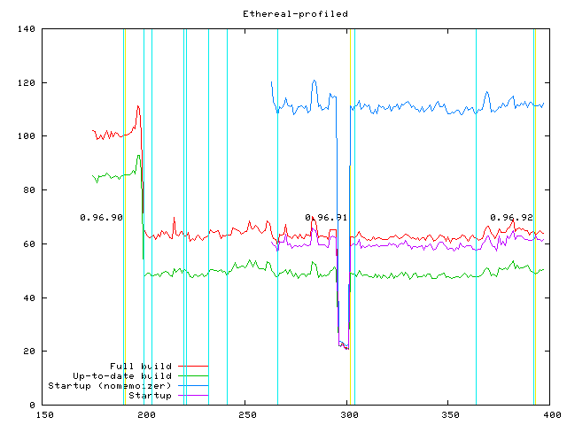
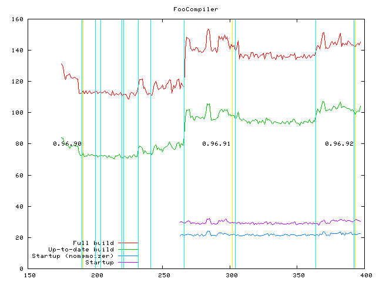
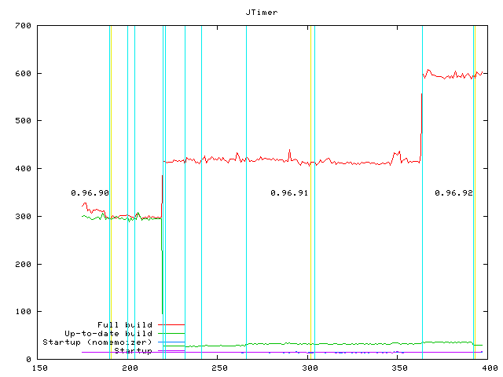
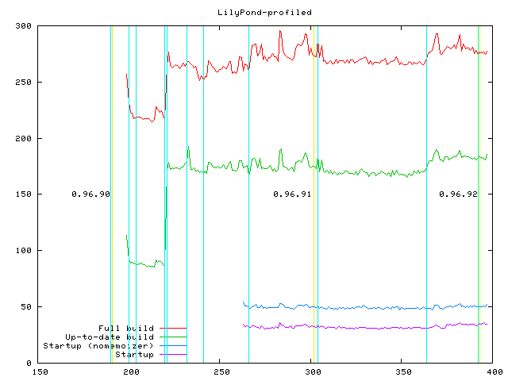
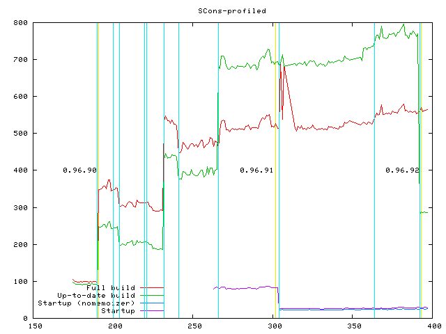
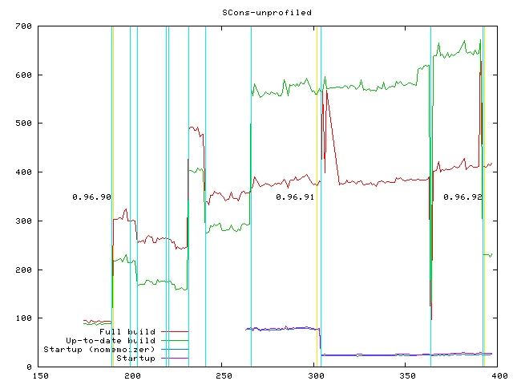

|
This is a stripped down version of the Ethereal packet sniffer.
There is a bug in its build configuration such that it bombs out
early in the build, so this mainly tests startup time.
- The drop in time at delta 200 was due to optimizing out an NxM inefficiency in matching the suffixes of files.
- The trough around delta 296-300 was due to a broken checkin that went unnoticed because I was behind on my timing runs.
All in all, because it's mainly testing startup, this is a
pretty consistent configuration now and doesn't reveal too much useful
information about timing changes introduced by new deltas. I'm
considering dropping this from my timing runs (or else, diving in and
fixing the build configuration so that we perhaps get something more
useful from it). |
|  |
This does a very simple test of 800 file copies.
- The slow down at delta 266 was due to a change that followed making the dependency path names stored in .sconsign files relative to the target, not the top-level SConstruct
directory. The change in delta 266 refactored the translation of
the strings stored in the .sconsign file into the Nodes in the current
run.
|
|  |
This is Kevin Massey's configuration, a simple chain of 100 files that
each depend on the next in turn, and then run with -j 2. This
configuration has really gotten hammered during the 0.96
development cycle.
- Notice that delta 220 made up-to-date builds a lot
more efficient (the drop in the green line) but significantly impacted
the full build. Delta 220 explicity "fixed" the ability to re-scan built files for dependencies when run with -j, but it did so by causing a lot of unnecessary
re-scans as well in certain configurations. In this
particular configuration, the chain of dependencies means only one
thing can be built at a time, so only
one worker thread is busy. The second thread keeps asking the
Taskmaster over and over and over, "Got anything for me to build?"
"No."
"Got anythning for me to build?" "No." "Got anything for me
to build?" No..." Each time it's asked, the Taskmaster
re-scans all the remaining Nodes (again and again and again), looking for something
that might have become buldable because its dependencies were
built since the last tme it was asked. This re-evaluating of Nodes over and over and over chews up a lot of
cycles, and may also be contributing to how much memory SCons consumes
during the build.
- This configuration gets significantly worse at delta
364, in between 0.96.91 and 0.96.92, when the explicit DirScanner was
introduced. Why? Because now the unnecessary re-scans of Nodes scan the whole directory tree each time the idle thread asks for some work.
I actually have a Taskmaster refactoring teed up
that fixes this, but right now it
depends on the big signature refactoring. I'm looking at trying
to retrofit this fix to the current 0.96.92 code base, so I can
perhaps release it in a 0.96.93 before the signature
refactoring get released and rocks everyone's world. |
|  |
This is a shrink-wrapped copy of the LilyPond music notation system contributed by the key LilyPond developers.
- At first glance, the spike at delta 221 looks like the same problem as the JTimer graph above, but it's actually the delta after the JTimer spike. This one was introduced when we started matching Entries while searching directories for
File or Dir nodes. The contrast between these two graphs shows very clearly how different
configurations can react in radically different ways to code changes in
SCons: delta 220 caused JTimer to slown down really badly but didn't affect this
configuration, and delta 221 didn't affect JTimer but slowed down this configuration really badly.
|
|  |
This is a copy of the SCons packaging build itself. This
configuration uses lots of very long lists of source files to decide if
different archive formats must be rebuilt.
- The spike at delta 190 (before 0.96.90 was released)
comes from adding a check that an on-disk entry isn't itself a
directory that matches the name of a file being searched for.
- The slight speed up at delta 204 comes from more efficient recording of build info for long source file lists.
- The big slow down at delta 232 comes from storing paths in .sconsign files relative to their target, not relative to the top-level SConstruct directory.
- The slight speed up at delta 241 comes from throwing the Memoizer at caching lookups of the relative paths that we store in .sconsign files.
- The next slow down at delta 266 came from moving when the
translation of the relative paths in the .sconsign file occurs,
essentially translating all of the path names in the file whether we
were going to use them or not. But also notice that this makes
the up-to-date build take longer
than the full build! That's because the up-to-date run now has a lot of file names in the .sconsign
file that chew up cycles getting translated into Nodes, where the
initial full build had none. I didn't dig into this because I
(mistakenly) dismissed it
as being something that only affected the SCons packaging build, not
"real" configurations.
- The up and down shaking at deltas 300-308 are erroneous, due to errors I introduced into the SCons packaging itself.
- Last, the big speed up of the up-to-date
build at delta 392 (note the jump of the green line from ~750 seconds
to ~290 seconds) comes from undoing the effects of deltas 232 and 266, by only converting the .sconsign file strings to Nodes when needed.
|
|  |
This is also the SCons packaging build, but this time it's run
with profiling turned off, as a sanity check that running
configurations with profiling on doesn't give drastically differnt
results from the non-profiled use of SCons that most people do.
As you'd expect, most of the key deltas that have significant
impact are the same as for the SCons-profiled configuration.
- The one-off drop at delta 364 was the same
introduction of the DirScanner that hurt the JTimer configuration, only
this time it broke my non-profiled build completely.
|